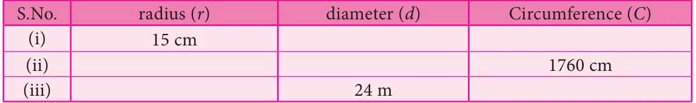

- Find the missing values in the following table for the circles with radius (r),
diameter (d) and Circumference (C).

- Diameters of different circles are given below. Find their circumference (Take \(p = \frac{22}{7}\) ).
- \(d = 70\) cm (ii) \(d = 56 m\) (iii) \(d = 28\) mm
- Find the circumference of the circles whose radii are given below.
- 49 cm (ii) 91 mm
- The diameter of a circular well is 4.2 m. What is its circumference?
- The diameter of the bullock cart wheel is 1.4 m. Find the distance covered by it in 150 rotations?
- A ground is in the form of a circle whose diameter is 350 m. An athlete makes 4 revolutions. Find the distance covered by the athlete.
- A wire of length 1320 cm is made into circular frames of radius 7 cm each. How many frames can be made?
- A Rose garden is in the form of circle of radius 63 m. The gardener wants to fence it at
the rate of ₹150 per metre. Find the cost of fencing?
Objective type questions
- Formula used to find the circumference of a circle is
- 2pr units (ii) pr \(+ 2r\) units (iii)pr sq. units (iv) pr cu. units
- In the formula, \(C = 2pr\) , 'r' refers to
- circumference (ii) area (iii) rotation (iv) radius
- If the circumference of a circle is 82p , then the value of 'r' is
- 41 cm (ii) 82 cm (iii) 21 cm (iv) 20 cm
- Circumference of a circle is always
- three times of its diameter
- more than three times of its diameter
- less than three times of its diameter
- three times of its radius